cbtis 16
Proyecto Final
jorge adrian sarmiento suarez
informcion sobre el plantel
Bienvenido al Portal de Informes de Actividades y de Rendición de Cuentas de Educación Media Superior
En cumplimiento a lo dispuesto en la fracción XII Quáter del artículo 14 de la Ley General de Educación y al Oficio No.: 980 de la Subsecretaría de Educación Media Superior, por el cual se emitieron los “Lineamientos conforme a los cuales los Directores de los planteles de educación media superior dependientes de la Secretaría de Educación Pública, deberán rendir el informe de sus actividades y rendición de cuentas”, se desarrolló este Portal, el cual permitirá a los Directores de los planteles federales de educación media superior, registrar y publicar oportunamente los informes de sus respectivas instituciones.
La aplicación permite la captura de los informes, considerando los siguientes rubros:
Situación académica
Personal docente, directivo y administrativo
Gestión financiera y administrativa
Infraestructura, equipamiento y conectividad
Otros rubros.
Cabe señalar que, además de la captura, el Director del plantel deberá subir a este Portal en formatos firmados y digitalizados (PDF), tanto los Informes como el Acta Circunstanciada con la que se acredite que el mismo ha sido rendido ante la comunidad educativa del plantel de que se trate.
proyecto final, JASS
INFORMACION SOBRE PROGRMACION
TÉCNICO EN PROGRAMACIÓN
Persona con conocimientos, habilidades y actitudes, capaz de ingresar a empresas de desarrollo de software, diseño gráfico, mantenimiento, outsourcing.
COMPETENCIAS PROFESIONALES
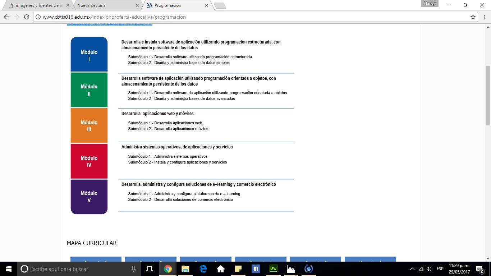
QUE ES PROGRAMACION
Programación es la acción y efecto de programar. Este verbo tiene varios usos: se refiere a idear y ordenar las acciones que se realizarán en el marco de un proyecto; al anuncio de las partes que componen un acto o espectáculo; a la preparación de máquinas para que cumplan con una cierta tarea en un momento determinado; a la elaboración de programas para la resolución de problemas mediante ordenadores; y a la preparación de los datos necesarios para obtener una solución de un problema a través de una calculadora electrónica
INFORMACION SOBRE MECANIACA ONDUSTRAIL
TÉCNICO EN MECÁNICA INDUSTRIAL
Profesionista que da mantenimiento a los sistemas de transmisión de potencia utilizando las máquinas herramientas convencionales, de control numérico, máquinas de soldar con arco eléctrico y oxigas auxiliándose de los procesos de ajuste de piezas mecánic
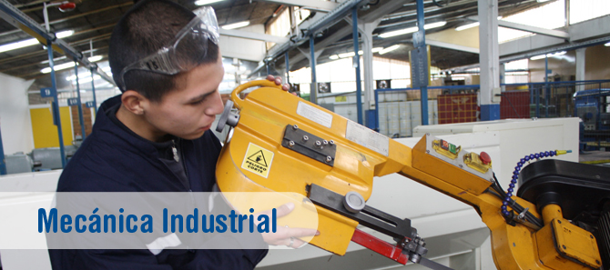
PERFIL DE EGRESO
Durante el proceso de formación de los cinco módulos, el estudiante desarrollará o reforzará las siguientes competencias profesionales, correspondientes al Técnico en Mecánica Industrial:
Suelda y ajusta piezas mecánicas.
Maquina piezas mecánicas en talador y torno.
Maquina piezas mecánicas en fresadora, rectificadora y cepillo.
Maquina piezas mecánicas por CNC.
Mantiene sistemas de transmisión de potencia.
OPORTUNIDADES DE INSERCIÓN LABORAL.
Industrias de transformación y procesos como: Textiles, del plástico, petroleras, metalmecánica, automotriz, pesqueras, mineras, siderúrgicas, agrícolas, alimenticia, química, de muebles, forestal, papelera, gráfica y en general todo tipo de industria de la producción y manufacturera que utilice maquinaria entre otras
proyecto final, JASS
INFORMACION SOBRE LOGISTCA
TÉCNICO EN LOGISTICA
Ofrece las competencias profesionales que permiten al estudiante realizar actividades dirigidas a la administración de bienes, planificando los suministros destinados al almacenamiento de manera manual y electrónica, la organización de los nodos logísticos para el transporte de mercancías, así como proveer los servicios y atención al cliente sobre los movimientos y los costos de la cadena logística.
PERFIL DE EGRESO
Durante el proceso de formación de los cinco módulos, el estudiante desarrollara o reforzará las siguientes competencias profesionales:
Supervisa el proceso de suministrio de bienes.
Apoya el proceso de administración al servicio de almacenaje de bienes.
Organiza el transporte de mercancías.
Proveve servicio de atencion al cliente sbre los movimientos de logistica. Organiza los costos de la cadena logística y de las competencias de productividad y empleabilidad:
Atencion al proceso
Planeación y organización
Ética profesional
Comunicación efectiva
Trabajo en equipo
Atención al cliente
Relaciones interpersonales
OPORTUNIDADES DE INSERCIÓN LABORAL
Nuestro país presenta una amplia diversidad de procesos de producción, desde los que utilizan tecnología moderna, hasta sistemas tradicionales; este hecho contribuye a diversificar las ocupaciones, los Comités interinstitucionales de Formación Profesional decidieron utilizar los siguientes: Sectores industriales, comerciales y de servicios, públicos o privados: Escuelas, constructoras, fábricas, centros comerciales, hospitales, inmobiliarias, hoteles, instituciones de crédito, despachos contables y tiendas de autoservicio. Autoempleo
proyecto final, JASS
INFORMACION SOBRE ELECTRICIDAD
TÉCNICO EN ELECTRICIDAD
La carrera de Técnico en Electricidad permite al estudiante sustentar la demanda de ocupación de Técnicos Electricistas en el sector productivo y de servicios, capaz de diseñar y realizar instalaciones eléctricas residenciales y comerciales, así como proporcionar mantenimiento a máquinas eléctricas.
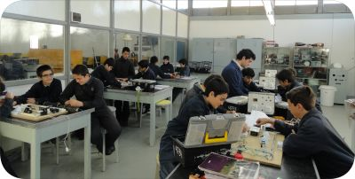
PERFIL DE EGRESO
Durante el proceso de formación de los cinco módulos, el estudiante desarrollará o reforzará las siguientes competencias profesionales, correspondientes al Técnico en Electricidad.
Desarrolla instalaciones eléctricas residenciales y comerciales.
Mantiene los motores y generadores de CA y CC.
Mantiene en operación los circuitos de control electromagnético y electrónico.
Mantiene los sistemas de iluminación y de energía renovable.
Mantiene instalaciones eléctricas de media y baja tensión.
OPORTUNIDADES DE INSERCIÓN LABORAL.
Todas estas competencias posibilitan al egresado su incorporación al mundo laboral o desarrollar procesos productivos independientes, de acuerdo con sus intereses profesionales o las necesidades en su entorno social.
proyecto final, JASS
imagenes y fuentes de informacion sobre el tema que trata
TU PREPA EN VIDEOS Y CONSTRUYE
YO NO ABANDONO Y ¿QUE BACHILLERATO VAS A ELEGIR?
LABORATORIO DE PROGRMACION
CONTAMOS CON CUATRO LABAROTORIOS DONDE LOS ALUMNOS DESARROLARAN SUS METAS DENTRO DE ESTA GRAN HERRAMIENTA
LABORATORIO Y SALA AUDIOVISUAL
CONTAMOS CON LABAROTORIOS DE QUIMA PARA MEJORAREL DESARROLO EDUCAIVO Y ADEMAS CON UNA SALA AUDIVISUAL PARA TENER UNA MEJOR EXPOCICION DEL TEMA
LABORATORIO DE LOGISTICA
CONTAMOS CON LABAROTORIOS DE LOGISTICA PARA MEJORAR EL DESAROLLO DE LOS JOVENES
proyecto final, JASS
INFORMACION SOBRE DEPORTES
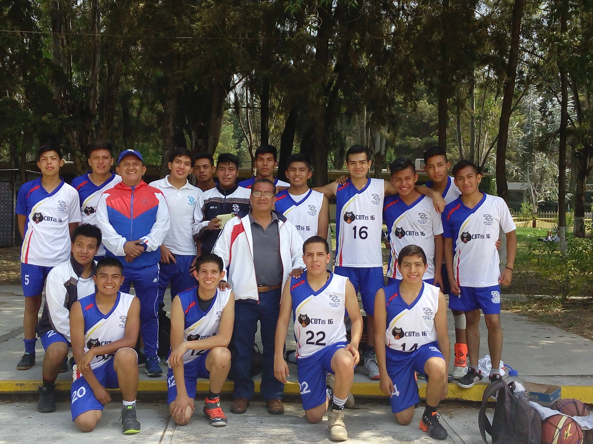
SE LLAVA A CABAO A NIVEL NACIONAL Y NTERNACIONAL SE COMPITE CON TODOS LOS CENTROS DE BACHILLERATOS Y PREPAS
SE CUENTA TAMBIEN CON EQUIPO DE FUTBOL VARONIL Y FEMENIL
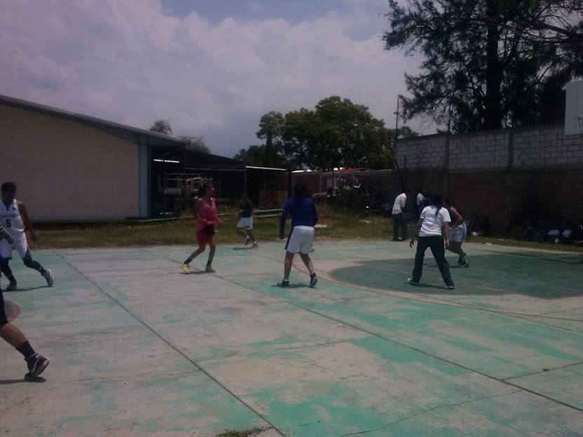
proyecto final, JASS
INFORMACION CULTURAL
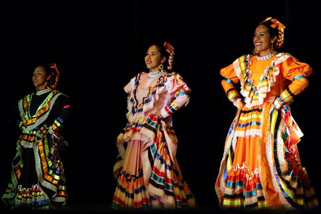
ACTUALMENTE NUSTRO PLANTEL CUENTA CON UN GROPU DE DNAZA QUE DEMUSTRA LO MEJOR DE LA CULTUA MEXCICA
HEMOS PARTICIPADO EN LOS DIRENTES PRYECTOS UNO DE ELLOS FUE HACER FELIZ A UN NIÑO CON CANCER EN PUEBLA
TAMBIEN HEMOS PARTICIPADO EN LOS EVENTOS DE PROTOTIPOS
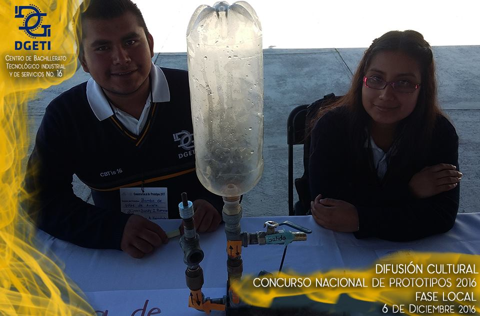
- 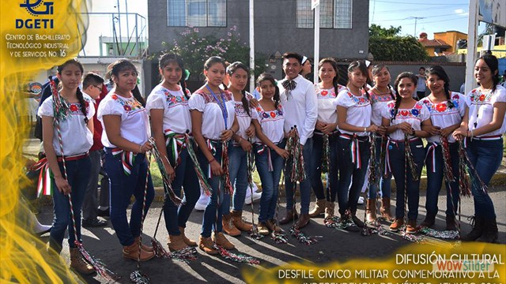
- 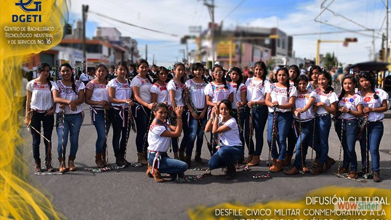
- 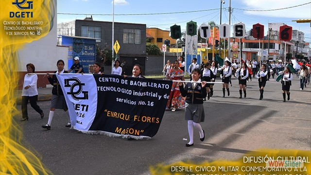
- 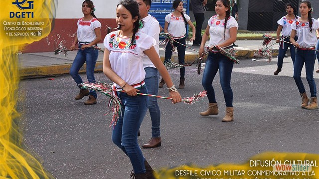
- 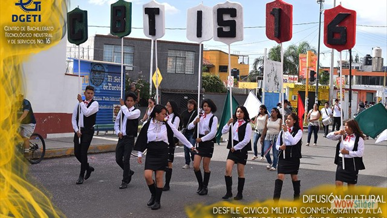
- 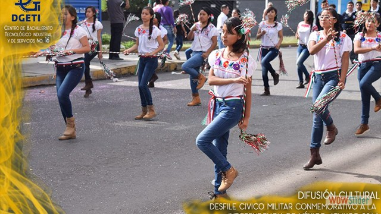
- 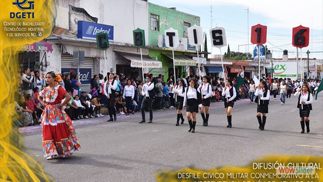
proyecto final, JASS
INFORMACION SOBRE DEPORTES
SE LLAVA A CABAO A NIVEL NACIONAL Y NTERNACIONAL SE COMPITE CON TODOS LOS CENTROS DE BACHILLERATOS Y PREPAS
SE CUENTA TAMBIEN CON EQUIPO DE FUTBOL VARONIL Y FEMENIL
proyecto final, JASS
INFORMACION CULTURAL
JORGE ADRIAN SARMIENTO SAUREZ 4F DESARROLA APLIACIONES MOVILES
DOCENTE JOSE ANTONIO GOMEZ HERNANDEZ
proyecto final, JASS
 4
4